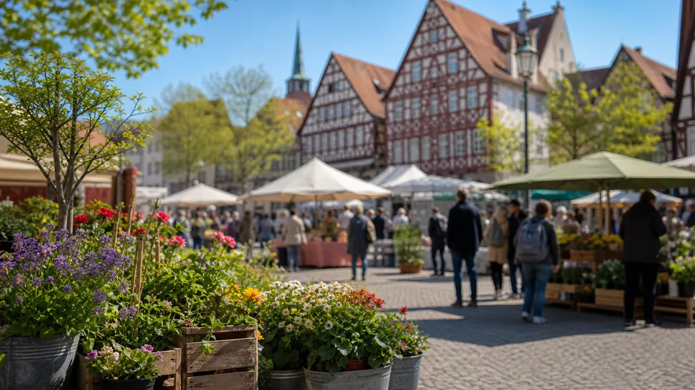

Tagesarchiv
56 regionale Meldungen
Alle Karten öffnen die jeweilige Originalmeldung.

Hessen Aktuell
Regionale Meldungen dieses Tages, gesammelt aus den aktiven Quellen und nach Stadt sowie Thema lesbar.
Tagesarchiv
Alle Karten öffnen die jeweilige Originalmeldung.
Meldungen

Kassel · Verkehr
Sperrungen stehen bevor auf der Ihringshäuser Straße (ab nächster Woche) und am Auedamm (Freitag). Gleich für ein ganzes Jahr ändert sich die Verkehrsführung in der Fiedlerstraße - wegen des Schul-Neubaus.

Kassel · Politik
Über „Die grüne Fürstin – Lucie von Pückler-Muskau“ referiert Autorin Sabine Köttelwesch am Mittwoch, 5. August, um 18 Uhr, in der Stadtbibliothek. Außerdem findet eine Lesung von Erzählerin Esther Dischereit zu ihrem Roman „Ein Haufen Dollarscheine“ am Mittwoch, 26. August, um 18 Uhr statt.

Kassel · Veranstaltungen
Eine Kunstbegegnung zur Vorbereitung auf die nächste Weltausstellung und zwei Treffpunkte im Museum - dazu laden Stadt und Hessen Kassel Heritage im Rahmen des städtischen Veranstaltungsprogramms "Neugierig und aktiv bleiben!" Menschen ab 60 Jahren im August ein.

Kassel · Politik
Zum Schutz von Igeln und anderen Tieren: Nächtlicher Einsatz ist verboten Weitere Details, Hintergründe und vollständige Angaben stehen in der verlinkten Originalmeldung.

Kassel · Politik

Kassel · Politik
Kassel · Politik
Vortrag und Workshopreihe im Haus der Demokratie Weitere Details, Hintergründe und vollständige Angaben stehen in der verlinkten Originalmeldung.
Kassel · Politik

Kassel · Polizei
Polizeihauptkommissar Mark Toporczissek hat das Amt des Dienststellenleiters der Polizeistation Hessisch Lichtenau übernommen und tritt damit die Nachfolge von Markus Eichenberg an.

Kassel · Polizei
Bereits zum zweiten Mal fand am 11. Juni eine Dialogrunde zwischen Schülern und Polizei im Kreis Waldeck-Frankenberg statt.

Kassel · Polizei
Die Polizei blickt auf eine gelungene Präventionsaktion am vergangenen Samstag beim diesjährigen Sommerfest in Großalmerode zurück und codierte vor Ort zahlreiche Fahrräder und E-Bikes.

Kassel · Polizei
Die Zahl der polizeilich registrierten Verkehrsunfälle in Nordhessen lag im Jahr 2025 bei leichtem Rückgang in etwa auf dem Vorjahresniveau.
Kassel · Polizei
Zu einem personellen Wechsel bei der Funktion des "Schutzmanns vor Ort" kam es kürzlich bei den Polizeistationen in Eschwege und Sontra.
Frankfurt · Polizei
Frankfurt (ots) - (bo) Der seit gestern Abend (21. Juli 2026) vermisste 77-jährige Herr Parviz H. konnte angetroffen werden. Die Vermisstenfahndung nach ihm wird hiermit zurückgenommen. Rückfragen bitte an: Polizeipräsidium Frankfurt am Main ...
Frankfurt · Polizei
Frankfurt (ots) - (la) Am gestrigen Dienstag (21. Juli 2026) kam es im Stadtgebiet gleich zu mehreren Widerstandshandlungen gegen Polizeibeamte. Drei Polizisten wurden dabei leicht verletzt. Gegen 18:30 Uhr begaben sich Polizeibeamte zunächst an ...
Frankfurt · Polizei
Frankfurt (ots) - (ha) In der Nacht von Dienstag (21. Juli 2026) auf Mittwoch (22. Juli 2026) verletzte sich ein E-Scooterfahrer im Zuge eines Verkehrsunfalls schwer. Der 20-Jährige soll nach aktuellen Erkenntnissen gegen 01:15 Uhr die Mainzer ...
Frankfurt · Polizei
Frankfurt (ots) - Am Sonntagnachmittag kam es am Eisernen Steg in Frankfurt am Main zu einem Messerangriff einer 70-jährigen deutschen Staatsangehörigen auf eine 37-jährige Frau, die die ehemalige Lebensgefährtin des 47-jährigen Sohnes der ...

Frankfurt · Verkehr
Frankfurt (ots) - (bo) Seit gestern Abend, 21. Juli 2026 gegen 19:30 Uhr, wird der 77-jährige Herr Parviz H. aus Frankfurt / Innenstadt vermisst. Letztmalig wurde er gestern Abend in seiner Pflegeeinrichtung in der Seilerstraße gesehen. Parviz H. ...

Frankfurt · Verkehr
Leitungsarbeiten der NRM in der Innenstadt. Weitere Details, Hintergründe und vollständige Angaben stehen in der verlinkten Originalmeldung.

Frankfurt · Verkehr
Keine Bahnen zwischen Dornbusch und Heddernheim Weitere Details, Hintergründe und vollständige Angaben stehen in der verlinkten Originalmeldung.
Frankfurt · Verkehr
So bunt und vielfältig wie Frankfurt Weitere Details, Hintergründe und vollständige Angaben stehen in der verlinkten Originalmeldung.
Frankfurt · Verkehr
Keine Nutzung mehr als Notunterkunft möglich. Weitere Details, Hintergründe und vollständige Angaben stehen in der verlinkten Originalmeldung.
Frankfurt · Verkehr
Straßenbahnlinien 11, 14 und 21 aufgrund von Gleis- und Weichenbauarbeiten im Frankfurter Westen nur eingeschränkt unterwegs.
Frankfurt · Verkehr
Anknüpfend an das Spitzengespräch zur Verbesserung der Situation im Frankfurter Bahnhofsviertel Ende Juni von Innenminister Roman Poseck und Oberbürgermeister Mike Josef hat Mainova zusammen mit der Stadt Frankfurt ihre Baustellen vor Ort geprüft.

Frankfurt · Sicherheit
Das Projekt gilt als wichtiger Baustein für die regionale Energiewende und bringt erneuerbare Energieerzeugung direkt in die Rhein-Main-Region.

Frankfurt · Wirtschaft
Verlässlichkeit in Zeiten des Umbruchs Weitere Details, Hintergründe und vollständige Angaben stehen in der verlinkten Originalmeldung.
Frankfurt · Verkehr
Die Mainova-Netztochter NRM Netzdienste Rhein-Mein registrierte am Donnerstag, 25. Juni 2026, und am Freitag, 26. Juni, neue Spitzenwerte beim Stromverbrauch. Die Tageshöchstlast lag jeweils über 900 Megawatt.
Frankfurt · Verkehr
Der Fernwärme-Ausbau in der Frankenallee wird fortgesetzt. Weitere Details, Hintergründe und vollständige Angaben stehen in der verlinkten Originalmeldung.
Wiesbaden · Verkehr
Zu den satzungsgemäßen Aufgaben des Stadtarchivs Wiesbaden gehört es auch, das aktuelle Stadtbild der hessischen Landeshauptstadt bildlich für die Zukunft festzuhalten. In den nächsten Monaten wird ein Mitarbeiter des Archivs daher in der Stadt unterwegs sein, um wichtige, markante und der Veränderung unterworfene.
Wiesbaden · Verkehr
Aufgrund einer Fahrbahnabsenkung ist die Otto-Wels-Straße in Fahrtrichtung Innenstadt ab sofort bis auf Weiteres gesperrt.
Wiesbaden · Verkehr
Die ESWE-Versorgungs-AG erneuert in der Möwenstraße 2-10, Flößergasse 2 und Anglergasse 15 ab Montag, 27. Juli, bis voraussichtlich Montag, 31. August, die Gasleitung.
Wiesbaden · Politik
Für die kommende Woche gilt weiterhin die Waldbrandstufe 4. Weitere Details, Hintergründe und vollständige Angaben stehen in der verlinkten Originalmeldung.
Wiesbaden · Politik
Gründerinnen und Gründer, Start-ups sowie Hochschulteams können sich noch bis Samstag, 15. August, für den StartAward 2026 bewerben. Mit dem Wettbewerb macht die Landeshauptstadt Wiesbaden sichtbar, wie viel Innovationskraft, Unternehmergeist und Zukunftspotenzial in Wiesbaden und der Region stecken.
Wiesbaden · Polizei
Wiesbaden (ots) - 1. Frau bei Auseinandersetzung verletzt, Wiesbaden, Mainz-Kostheim, Römerfeld, Dienstag, 21.07.2026, 18:25 Uhr (fh)Am Dienstagabend sorgte eine Auseinandersetzung in einem Mehrfamilienhaus in Kostheim für einen größeren ...
Wiesbaden · Verkehr
Wiesbaden / Hanau (ots) - Gemeinsame Folge-Pressemitteilung der Staatsanwaltschaft Hanau und des Hessischen Landeskriminalamts (HLKA) Am vergangenen Samstag (18.07.) kam es in den frühen Morgenstunden auf der Landstraße zwischen Hanau und ...
Wiesbaden · Polizei
Wiesbaden (ots) - 1. 36-Jähriger leistet Widerstand gegen Polizeikräfte, Wiesbaden-Dotzheim, Dotzheimer Straße / Holzstraße, Samstag, 18.07.2026, 22:20 Uhr bis 22:40 Uhr (kq)Am Samstagabend kam es in Wiesbaden-Dotzheim zu einem Widerstand gegen ...
Wiesbaden · Polizei
Wiesbaden (ots) - Digitale Tatbegehungsformen und KI haben zunehmend Einfluss auf den sexuellen Missbrauch an Minderjährigen Die Fallzahlen bei Sexualdelikten an Kindern und Jugendlichen sind im Jahr 2025 in vielen Bereichen gestiegen. Immer mehr ...
Wiesbaden · Polizei
Wiesbaden (ots) - 1. E-Scooter gewaltsam entwendet, Wiesbaden-Nordenstadt, Oppelner Straße, Sonntag, 19.07.2026, 00:10 Uhr bis 00:20 Uhr (kq)In der Nacht zum Sonntag wurde einem 16-Jährigen in Wiesbaden-Nordenstadt der E-Scooter entwendet. Der ...
Darmstadt · Politik
14. Auflage ab sofort erhältlich Weitere Details, Hintergründe und vollständige Angaben stehen in der verlinkten Originalmeldung.
Darmstadt · Politik
Deutsche Akademie für Sprache und Dichtung zieht nach Restaurierungsarbeiten zurück in das Große Haus Glückert Weitere Details, Hintergründe und vollständige Angaben stehen in der verlinkten Originalmeldung.

Darmstadt · Veranstaltungen
Wissenschaftsstadt Darmstadt und Jüdische Gemeinde Darmstadt feiern vom 1. September bis zum 6. Dezember Weitere Details, Hintergründe und vollständige Angaben stehen in der verlinkten Originalmeldung.
Darmstadt · Polizei
Darmstadt (ots) - Zwischen Samstagmittag (18.7.), 12.30 Uhr, und Montagmorgen (20.7.), 7.30 Uhr, nahmen bislang unbekannte Täter eine Baustelle in der Landwehrstraße ins Visier. Nach derzeitigem Ermittlungsstand verschafften sich die Unbekannten ...
Darmstadt · Verkehr
Darmstadt (ots) - Am Sonntagmorgen (19.7.) kam es gegen 5.30 Uhr im Bereich des Südbahnhofs zu einem schweren Bahnunfall. Nach bisherigen Erkenntnissen wurde ein 23-jähriger Mann aus bislang ungeklärter Ursache von einem durchfahrenden Zug ...
Darmstadt · Polizei
Darmstadt (ots) - Ein bislang unbekanntes Täterduo hat sich am Sonntagmorgen (19.7.) als Polizeibeamte ausgegeben und einen Mann im Alter von 33 Jahren unter einem Vorwand am Riegerplatz kontrolliert. Nach bisherigen Erkenntnissen wurde der ...
Darmstadt · Polizei
Trebur (ots) - Gemeinsame Pressemeldung der Staatsanwaltschaft Darmstadt und des Polizeipräsidiums Südhessen Nach einer Auseinandersetzung zwischen einem 44-Jährigen und zwei Nachbarn am Samstagvormittag (18.7. / wir haben berichtet) befindet ...
Darmstadt · Polizei
Darmstadt (ots) - Ein bislang unbekannter Krimineller nahm am Mittwochmittag (15.7.) zwischen 12 und 13 Uhr eine Seniorin an ihrer Wohnanschrift in der Freiligrathstraße ins Visier. Während die Frau ihre Einkäufe nach Hause bringen wollte, bot ...
Hessen · Verkehr
Das Fachkonzept identifiziert landesweit 30 prioritäre Wiedervernetzungsabschnitte entlang von Bundes- und Landesstraßen in der Zuständigkeit von Hessen Mobil.
Hessen · Verkehr
Gegenstand des Verfahrens war die verfassungsrechtliche Prüfung des Gesetzentwurfs und die Frage, ob die Voraussetzungen für die Zulassung eines Volksbegehrens vorlagen.
Hessen · Verkehr
Aus den eingereichten 29 Anträgen wurden vier Serious Games mit besonderem Lern- oder Informationsschwerpunkt und drei Unterhaltungsspiele ausgewählt.
Hessen · Verkehr
Bis zum 14. August können hessische Unternehmen im Rahmen eines Interessensbekundungsverfahrens ihre Vorschläge für internationale Zielmärkte und Fachmessen einbringen.
Hessen · Verkehr
Mit der Korridorsanierung modernisiert die Deutsche Bahn die rund 160 Kilometer lange Strecke zwischen Troisdorf und Wiesbaden grundlegend.
Hessen · Politik
Roman Poseck: „Hessen setzt seine Rückführungsoffensive konsequent und erfolgreich fort. Im 1. Halbjahr 2026 lag die Erfolgsquote bei den Abschiebungen bei 64 %.“
Hessen · Polizei
Innenminister Poseck besuchte bei seiner Sommertour 10 Polizeistationen, zwei Streifen und eine Großkontrolle. Weitere Details, Hintergründe und vollständige Angaben stehen in der verlinkten Originalmeldung.
Hessen · Politik
Die Steuerverwaltungen der Länder Hessen und Rheinland-Pfalz intensivieren ihre Zusammenarbeit auf dem Gebiet der Informationstechnologie.
Hessen · Politik
Das „Café der kleinen Schätze“ unterstützt Familien mit Beratung und Hilfe aus einer Hand. Staatssekretärin Müller hat das für den Demografie-Preis 2026 nominierte Projekt besucht.
Hessen · Polizei
Innenminister Poseck hat den Christopher Street Day besucht. Er hat sich gegen queerfeindliche Gewalt ausgesprochen und den Einsatz der Polizei für Sicherheit und Vielfalt gewürdigt.